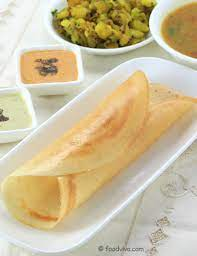

Dosa

Dosa is a popular South Indian crepe made from fermented rice and lentil batter. It is a thin and crispy pancake, usually served with a variety of chutneys and sambar (vegetable stew). Dosas come in many varieties, including masala dosa, onion dosa, and cheese dosa, and are enjoyed as a breakfast or snack item.
Ingredients
- 1 cup uncooked white rice
- 1/2 cup uncooked urad dal (white lentils)
- 1/2 teaspoon fenugreek seeds (optional)
- 1/2 teaspoon salt
- 1/4 cup water (plus more as needed)
Instructions
- Rinse the rice, urad dal, and fenugreek seeds (if using) separately in water. Soak them in enough water for at least 4 hours, or overnight.
- Drain the water from the rice, urad dal, and fenugreek seeds. Grind them in a blender or wet grinder, adding water as needed, until you have a smooth batter. The batter should be thick but pourable.
- Transfer the batter to a large bowl and add salt. Mix well and cover the bowl with a lid or plastic wrap. Let it ferment in a warm place for at least 8 hours or overnight. The batter should double in volume and develop a slightly sour smell.
- Heat a non-stick skillet or dosa pan over medium-high heat. Once hot, reduce the heat to medium-low. Spread a few drops of oil over the pan using a folded paper towel or a brush.
- Pour a ladleful of the dosa batter onto the center of the pan. Quickly spread the batter in a circular motion with the back of the ladle to form a thin and even layer. Drizzle some oil over the edges of the dosa.
- Cook the dosa until the edges turn golden brown and the surface looks cooked. Use a spatula to fold the dosa in half and transfer it to a plate.
- Repeat the process with the remaining batter, stirring the batter well before making each dosa.
- Serve hot with sambar and coconut chutney or any other chutney of your choice.